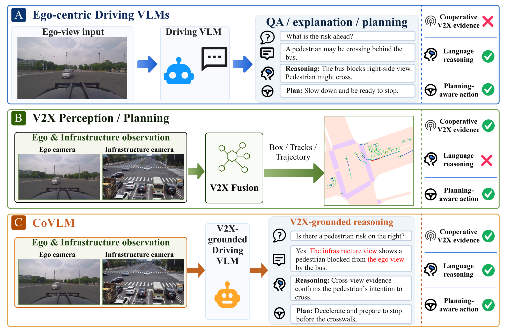

CoVLM-Bench: Does the Right Roadside View Matter for V2X Language and Planning?
A real-world V2I benchmark connecting paired camera views, grounded driving questions, and structured planning. Roadside-input controls examine how models use shared visual evidence, with CoVLM-Drive as a VLM reference planner.
Preprint not yet available.